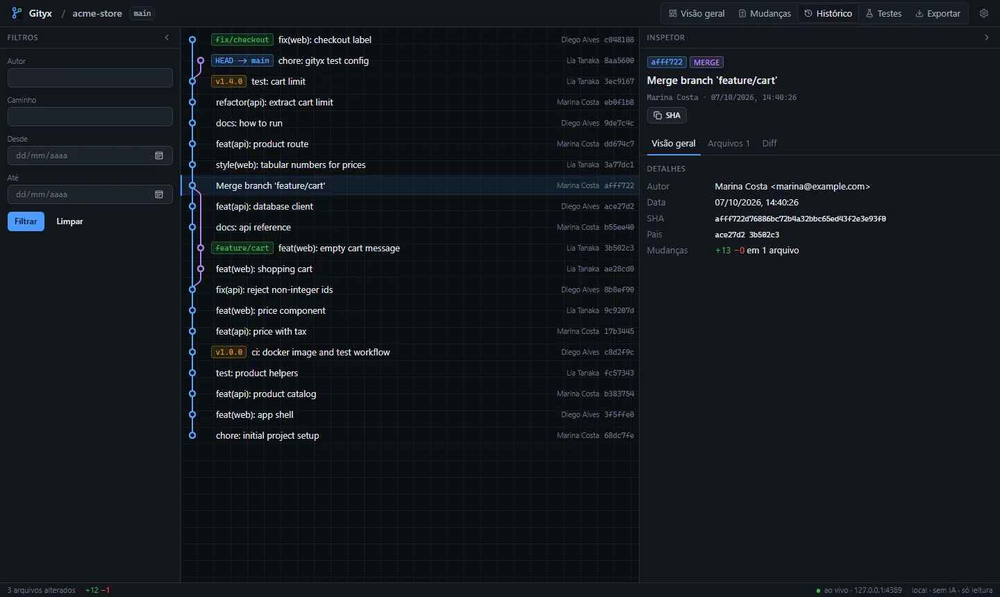
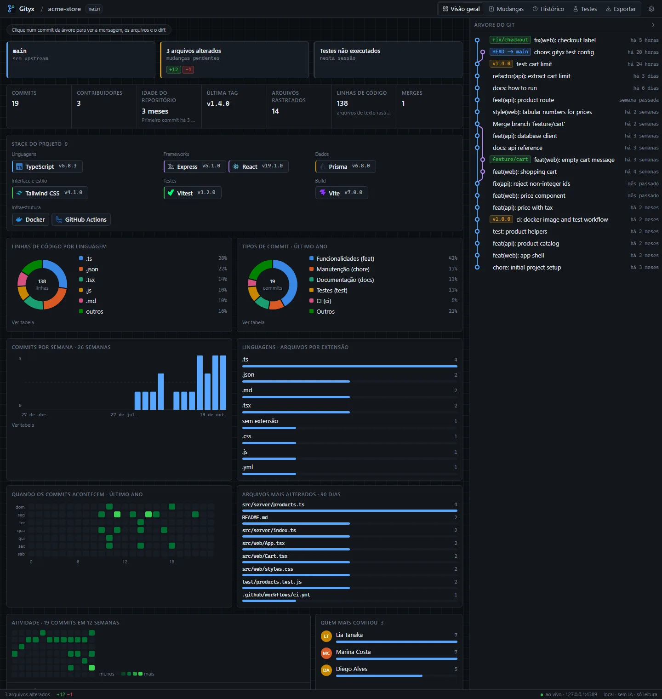
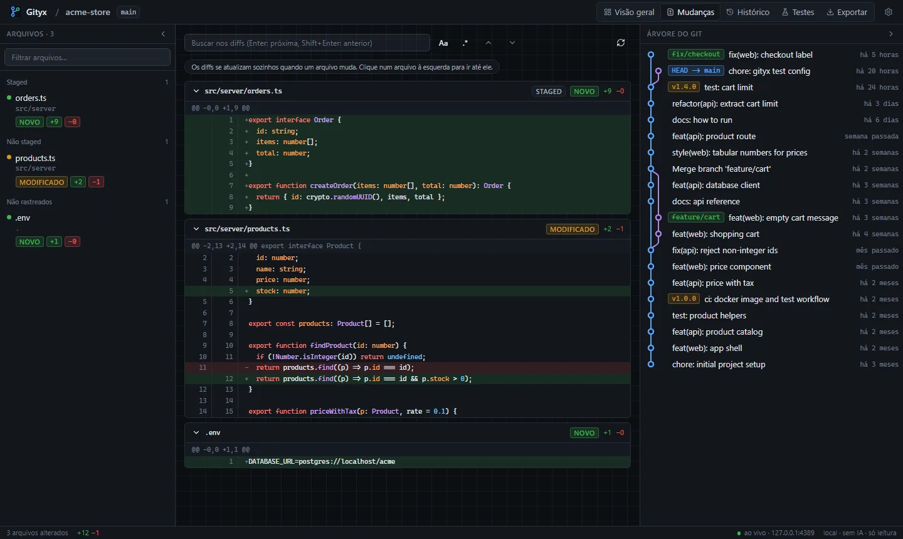
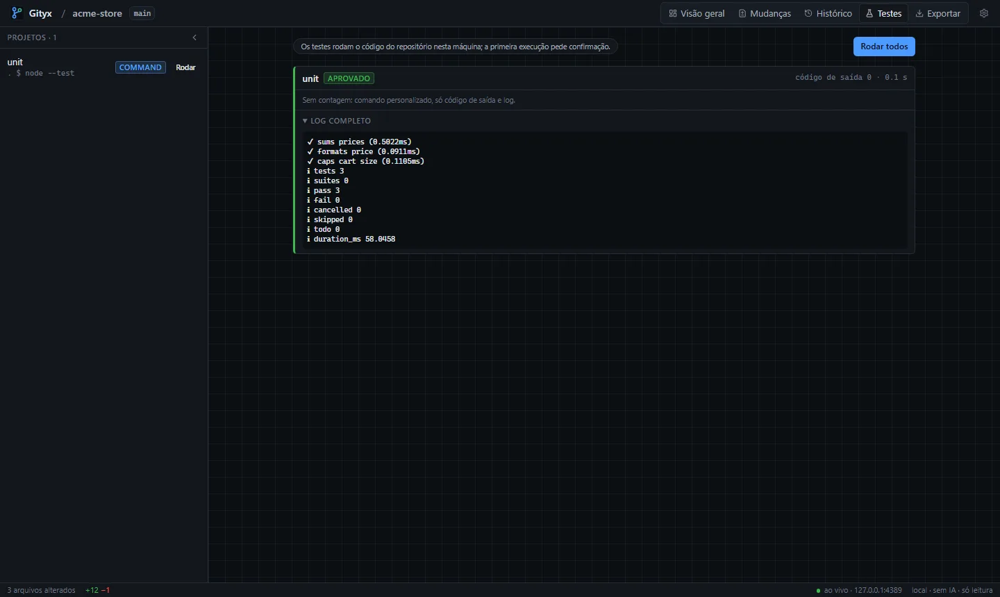
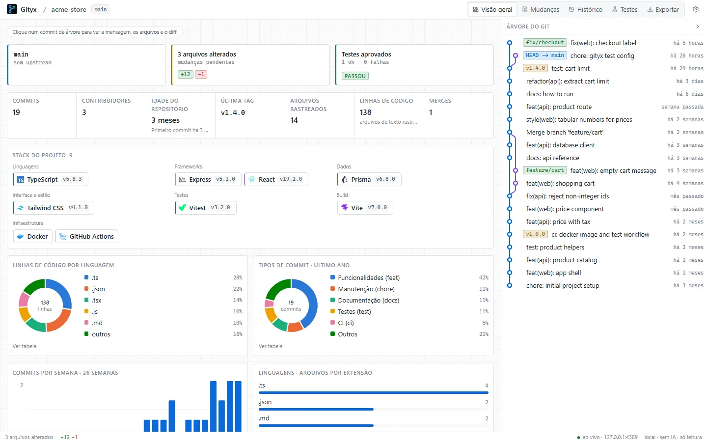

Gityx
Gityx
O Git do seu repositório no navegador: grafo de commits, mudanças ao vivo, estatísticas e testes. Roda na sua máquina, sem IA, e nunca escreve no repositório.Your repository's Git in the browser: commit graph, live changes, stats and tests. Runs on your machine, without AI, and never writes to the repository.


 0
0

O que fazWhat it does
- Visão geral: branch, mudanças pendentes, último teste e os números do projeto.
- Overview: branch, pending changes, last test run and the project's numbers.
- Stack detectada a partir de
package.json,go.mod, Dockerfile e mais, com ícone e versão. - Detected stack from
package.json,go.mod, Dockerfile and more, with icon and version. - Gráficos: linhas por linguagem, tipos de commit, commits por semana, calendário de atividade.
- Charts: lines by language, commit types, commits per week, activity calendar.
- Mudanças ao vivo com diff destacado e busca por texto ou regex.
- Live changes with highlighted diffs and search by text or regex.
- Testes: Jest, Vitest, Go, pytest, cargo e outros encontrados automaticamente.
- Tests: Jest, Vitest, Go, pytest, cargo and more found automatically.
- Exportação em HTML offline, Markdown ou JSON.
- Export to offline HTML, Markdown or JSON.
Como funcionaHow it works
O servidor observa os arquivos e avisa o navegador por Server-Sent Events quando algo muda. Um teste de fumaça quebra o build se o site referenciar qualquer URL externa.The server watches files and notifies the browser through Server-Sent Events when something changes. A smoke test fails the build if the website references any outside URL.
Só leitura. O Git roda com
execFile e listas de argumentos, nunca por shell. Nenhum commit, checkout, stage, fetch ou push.Read-only. Git runs through execFile with argument arrays, never a shell. No commit, checkout, stage, fetch or push.Como rodarRun it
git clone https://github.com/SamuelSchutz13/Gityx.git cd Gityx npm install npm run build npm link # deixa o comando `gityx` disponível em qualquer lugar# makes the `gityx` command available everywhere gityx # sobe o servidor e abre o navegador# starts the server and opens the browser gityx --port 8080 --open=false
ImagensImages



